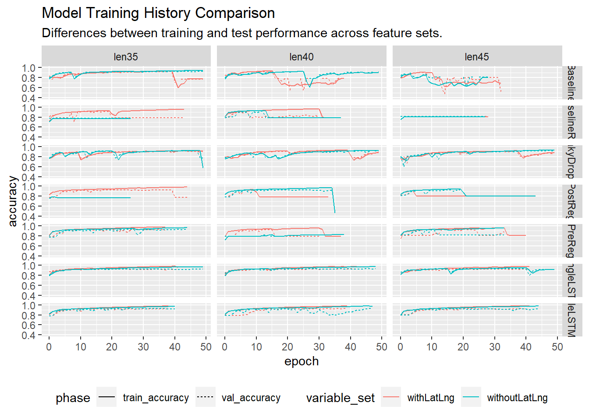

Section 3 Model Performance
library(tidyverse)featureset_df = read_csv('data/featuresets_ModelHistories.csv')
accuracy_df <- featureset_df %>%
rename(train_loss = loss, train_accuracy = accuracy) %>%
select(-c("val_loss", "train_loss")) %>%
pivot_longer(cols = c(train_accuracy, val_accuracy), names_to = "phase", values_to = "accuracy")
loss_df <- featureset_df %>%
rename(train_loss = loss, train_accuracy = accuracy) %>%
select(-c("val_accuracy", "train_accuracy")) %>%
pivot_longer(cols = c(train_loss, val_loss), names_to = "phase", values_to = "loss")ggplot(accuracy_df, aes(x = epoch, y = accuracy, color = variable_set, linetype = phase)) +
geom_line(linewidth = 10) +
ylim(0.4,1.0) +
facet_grid(vars(model), vars(len_instance)) +
ggtitle("Model Training History Comparison", subtitle = "Differences between training and test performance across feature sets.") + theme(legend.position = "bottom")